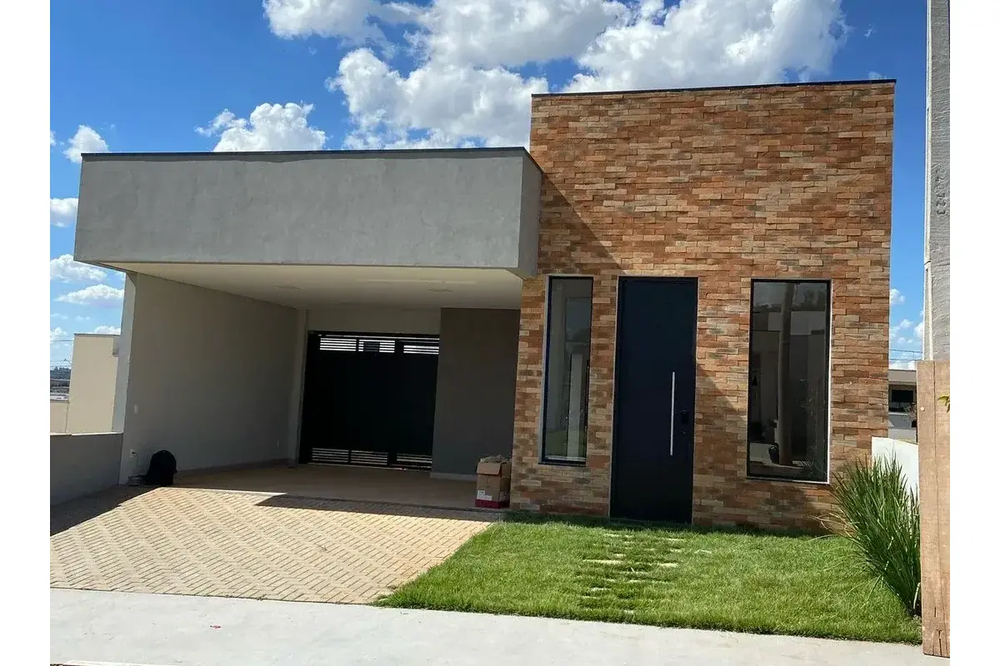
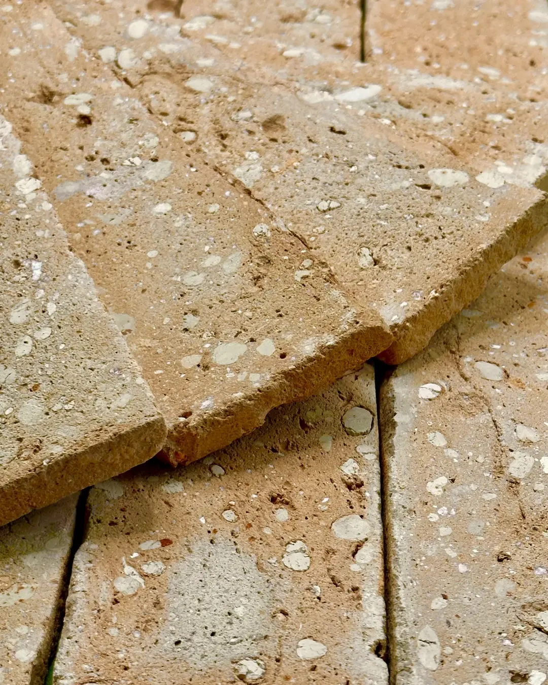

1. Parede do churrasqueiro em Brick Rosso Prime
A parede que emoldura o churrasqueiro é o ponto focal da área gourmet. O Rosso Prime, com seu vermelho terracota uniforme e acabamento levemente irregular, cria um pano de fundo quente e sofisticado sem precisar de nenhum outro elemento decorativo. Combine com bancada em granito escuro e a tensão entre rusticidade e precisão fica evidente da melhor forma. Veja mais detalhes do Brick Rosso Prime na página do produto.
2. Mescla Prime com iluminação rasante
O Mescla Prime tem variação natural de tonalidade que se transforma completamente dependendo da luz. Com iluminação rasante (spots apontados paralelos à parede), cada peça projeta uma sombra sutil que intensifica a textura. O resultado é uma parede que parece diferente no almoço e no jantar — e que fica mais interessante à medida que a luz do dia muda.

Em áreas cobertas mas abertas, como pergolados, prefira o Brick com impermeabilizante aplicado após a cura do rejunte. Isso evita manchas de umidade e facilita a limpeza depois das churrasqueiras de fogo direto. Temos um guia específico de limpeza e manutenção com dicas para manchas de gordura.
3. Pisos em Lastra Rosso com parede em Rockface
Combinar o piso Lastra Rosso — horizontal, com textura lisa e rústica — com uma parede em Rockface cria um ambiente onde dois tipos de textura se complementam sem competir. O truque é manter a paleta cromática próxima: ambos os materiais trabalham na família dos cinzas e terrosos, então a combinação tem coerência mesmo sendo muito diferente em toque e aparência.
4. Tijolinho aparente no teto
Menos comum mas igualmente eficaz: o tijolinho no teto de uma área gourmet fechada cria uma ambiência de taverna italiana ou cave urbana. O Eco Palha, mais claro, mantém o ambiente luminoso mesmo no teto. Já o Terra do Cerrado cria um efeito mais íntimo e dramático. Ambos pedem iluminação embutida estratégica — pendentes longos funcionam bem como contraponto moderno.

5. Bancada de concreto com fundo em Cimentício Grigio
Para quem prefere um gourmet de linguagem industrial, o Cimentício Grigio na parede atrás da bancada funciona como extensão natural do concreto polido. A continuidade de tom entre bancada e parede cria um efeito de volume único — e qualquer detalhe metálico (torneiras, trilhos de iluminação) ganha destaque sobre esse fundo neutro.
6. Parede de tijolinhos com trepadeira
O Natura — terracota uniforme — é o mais harmônico com vegetação. Uma trepadeira crescendo sobre o tijolinho cria aquele visual de casas europeias envelhecidas, mas sem abrir mão da resistência do produto cerâmico. Nessa composição, o rejunte escuro intensifica o contraste com o verde da planta e com o tom da cerâmica.